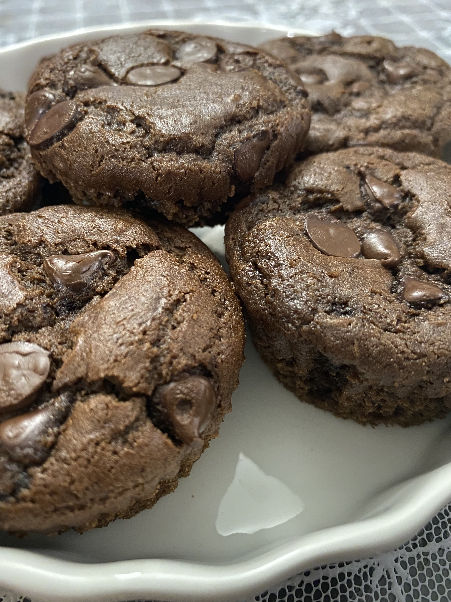

Mochi Brownies

I love mochi. Whoever thought of incorporating mochiko flour into baked goods was a genius. Chewy goodness.
Ingredients
- 130g dark brown sugar
- 169g Mochiko flour
- 4g(1/4 tsp) baking powder
- 15g cocoa powder
- 1.5g (1/4 tsp) salt
- 1g (1/2 tsp) instant coffee
- 30g unsalted butter melted
- 200ml whole milk
- 1 large egg
- 55g dark chocolate chips
Steps
- Weigh and sift all brown sugar, flour, baking powder, cocoa powder, salt and instant coffee into a medium bowl. Whisk to combine well, then set aside.
- Preheat oven to 350°F or 180°C. Grease the muffin tray with melted butter and set aside.
- Pour the remaining butter into a medium bowl along with milk and egg. Whisk to combine well.
- Add in the dry ingredients and whisk again to combine.
- Pour and divide mixture evenly into 12 muffin holes. Top each with chocolate chips.
- Bake for 40 minutes or until top crust is fully formed but slightly springy to the touch.
- Chill them on cooling rack for 10 minutes. Using a toothpick, push each out from the side.
Credit
Return to home